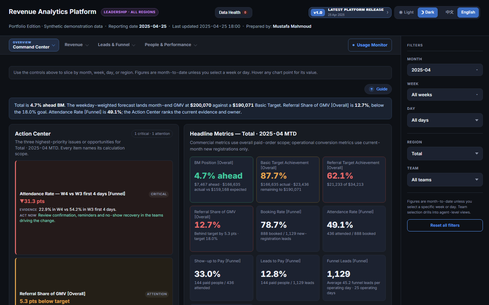

Cairo, Egypt · Open to remote and relocation
Revenue Operations Analyst & Analytics Engineer
I design the metrics, build the platforms and run the release process that show a revenue team where money is won or lost.

Most analysts hand over a report. I hand over the instrument: a platform that recomputes every rate from filtered numerators and denominators, reconciles itself against its own totals, and tells the team what to do next.
Four years across operations, quality and commercial analytics in Egypt, China and the Gulf taught me where revenue actually leaks. I now design the metrics, build the pipelines and direct AI coding agents to ship them under strict controls.
Not a dashboard decorator. I define attribution rules, audit other people's calculations and refuse to publish a number I can't reconcile.
Always-on decision platform for a multi-region online education business: daily files in, governed snapshots out, with a drill-down from total to region, team and individual consultant. Everything below is the clean-room edition running on deterministic synthetic data.
Bilingual, light and dark, mobile-safe. Hierarchical filters reset invalid child selections automatically, and every rate is recomputed from the filtered counts, never an average of percentages.
Screenshots are from the portfolio edition: generated data, fictional teams and regions, no operational figures.
The platform is only as good as the data behind it. Each morning, raw files and BI extracts arrive, are checked, turned into a governed snapshot, published and announced. Roughly 18–24 manual report builds a day no longer exist.
Instead of exporting a large joined workbook by hand, a Python query builder drives a signed-in browser session and runs a bounded SQL query against the BI platform's own workbench. Each extraction takes about 8 seconds.
WITH message_facts AS (
SELECT
message_id,
template_name,
min(send_time) AS first_send,
max(send_status = 1) AS sent,
max(is_delivered = 1 OR is_read = 1) AS delivered,
max(is_read = 1) AS read,
uniqExact(tuple(send_status, is_delivered, is_read)) AS variants
FROM analytics.message_send_log
WHERE send_time >= toDateTime('<START>', 'Asia/Shanghai')
AND send_time < toDateTime('<END>', 'Asia/Shanghai')
AND template_name IN (<APPROVED_TEMPLATES>)
GROUP BY message_id, template_name
)
SELECT
toDate(first_send, 'Asia/Shanghai') AS day,
template_name,
sum(sent) AS sent_count,
sum(delivered) AS delivered_count,
sum(read) AS read_count,
countIf(variants != 1) AS conflicts -- must be 0
FROM message_facts
GROUP BY day, template_name
ORDER BY day, template_name;Every incoming file is checked before it can reach the snapshot. A malformed export, such as a line with 24 fields instead of 133, triggers an automatic alert to the data engineering team with the exact file, line and counts, and notifies the source owner.
Alerts use stable identities so a retry cannot send twice. A session that expires is reported as an authentication problem, not as missing data, and stale data is never presented as fresh.
More than 100 automated tests cover the pipeline, and each daily run checks 22 source inputs. Recovery from a real incident was recorded with evidence and turned into a permanent check.
The same discipline runs an automated agent workflow inside an internal assistant, the Customer Intelligence Bot. Instructions are short, ordered and explicit about stop conditions, and the run improves from developer notes after every cycle.
per authenticated SQL extraction
manual reports replaced per daily cycle
source inputs validated every run
automated tests behind the pipeline
Strategy and engineering in one person, so the metric, the pipeline and the decision never drift apart.
Finding the stage where money is lost and sizing the fix.
A metric layer people can trust and audit.
Interfaces that tell leaders what to act on.
Reporting that runs without anyone remembering it.
Controls built in, not bolted on.
Agents execute; I specify, constrain and verify.
A production analytics platform is a product. It gets staging, tests, documentation sync and a hard rule against publishing from the wrong branch.
JavaScript and Python test modules in the release gate
Forecast candidates compared on identical backtest origins
Numbered operating manual plus a generated system map
Region and leadership builds with verified-email access control
The leverage is in the contract, not the prompt: who owns what, what must never change, and how a fresh session recovers context without guessing.
main.A new session must produce a recovery summary (objective, privacy boundary, plan, open decisions) and wait for approval before writing code.
Month-keyed targets, no hard-coded paths, generated folders never treated as source, and docs updated in the same change as logic.
Custom skills for analysis contracts, report styling and meeting-to-action automation, backed by a curated, cross-linked memory of working rules.
Screenshot QA before any deploy, minimal reproductions for recurring alerts, and metrics checked against the documented formula, not a neighbouring row.
A synthetic twin of the platform built from seeded generators, with source-lineage records and privacy checks before any claim of parity.
Parallel sub-agents are priced before launch, and cheaper options are tried first so one job cannot exhaust the working budget.
Selected analyses, de-identified. Each ends in something a team could act on, with the limits of the evidence stated.
Compared six months of customer-months to find a simple, explainable selection rule. Paid tenure ≤ 90 days selected 30% of the base and captured 71% of successful referrers, holding in every month tested.
Reliability stated up front: only about a third of referrers could be traced to an eligible customer-month, so the rule describes the traceable group. The next month was held out as an untouched validation set.
Decomposed referral GMV into leads, closing and order value. Value per sale was flat and closing had risen and held, so lead volume was the swing factor, and one customer segment closed markedly better than another.
Output was a control loop: watch lead supply and segment mix weekly, with a closing-rate floor, knowing revenue lags leads by three to four weeks.
Compared a production dashboard against a manually reconciled workbook. An unmatched-consultant fallback was leaking orders into one region and producing an impossible 194.5% conversion rate.
Fixed on a branch with a pull request, covered by a visible QA check, and the daily pipeline was re-linked to the corrected build.
Built a measurement framework that quantified contribution by failure type and exposed recurring platform defects, then drove the fix through a daily KPI and weekly close-out loop.
An n8n workflow connecting capture, eligibility checks, programme routing, tailored email, logging and model-assisted recommendations for sales review.
Online education company. Designed and built the regional commercial analytics platform, its attribution rules, reconciliation controls and automated reporting, and shaped referral growth initiatives for stakeholders across Egypt, China and the Gulf.
Built the measurement framework behind a reachability improvement, plus a daily KPI and weekly close-out system for a multi-timezone team.
Turned recurring performance problems into analyses and decision tools, and built automated Excel systems with multi-source validation.
Cairo, Egypt · open to remote roles and relocation in Revenue Operations, Analytics Engineering and BI.